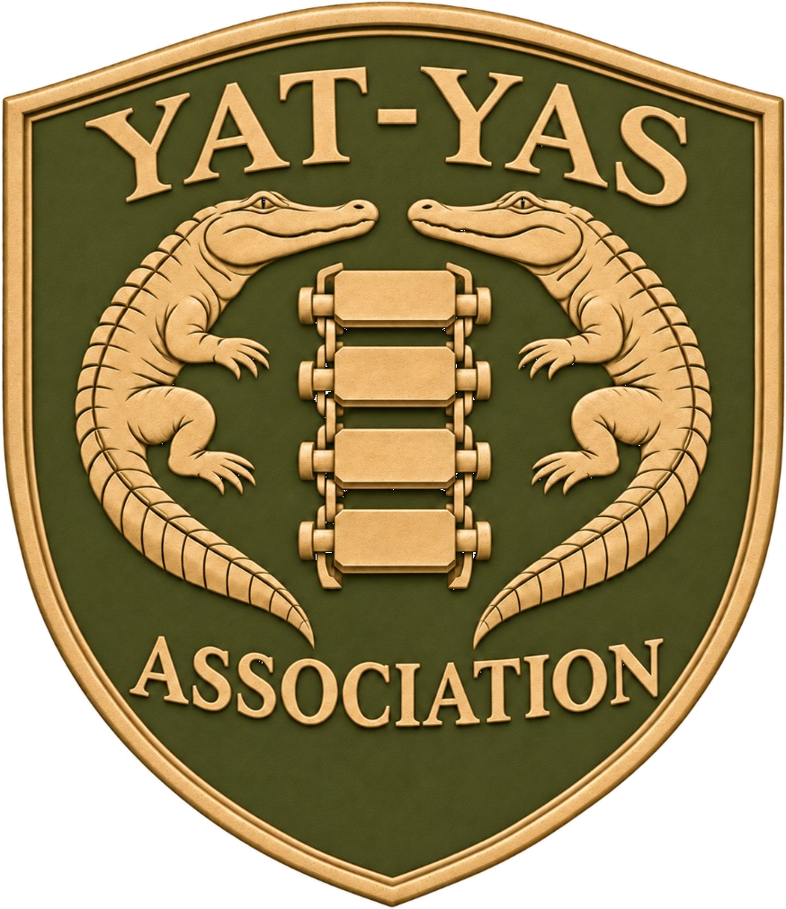

YAT-YAS Association, Inc.
Assault Amphibian Community
yatyasassociation.com
Dear Jose,
This letter comes from the Association with a straightforward ask — and a real one.
YAT-YAS is the tracks motto of the amphibious community — You ain't tracks, you ain't shit. That call belongs to the Alligator Marines who manned the iron from ship to shore, and to the families who stood with them. The Association’s mission is clear: Preserving the legacy of the Alligator Marines — for those who served, those serving, and those still to come — through family, fellowship, and the next generation. That means carrying the lineage forward from the Landing Vehicle Tracked through today’s Amphibious Combat Vehicle, and looking after our own along the way — supporting scholarships for the next generation, holding gatherings where the tracks community can come together, and serving as a place where deployed individuals receive care packages, a simple way to remind them they are not forgotten while they are downrange.
The Association is underway. The legacy site is live at yatyasassociation.com. The name is on the door. What makes it real is the people who choose to partake — not as spectators, but as those willing to help lead.
Jose, the Association is asking you to partake as Vice President and Founder.
That role means standing with the Association as it finds its footing: helping set the tone, speaking plainly when it matters, and helping keep faith with the tracks community that gave this name its meaning. The Association does not need ceremony for its own sake. It needs someone who understands what YAT-YAS actually means — and who is willing to carry that forward.
If you are willing to partake in this way, please reply and say so. If you have questions or reservations, send those too. The Association would rather hear the truth early and clear.
YAT-YAS. From the iron, for the ones still to come.
Respectfully, on behalf of the Association,
The Association
YAT-YAS Association, Inc.